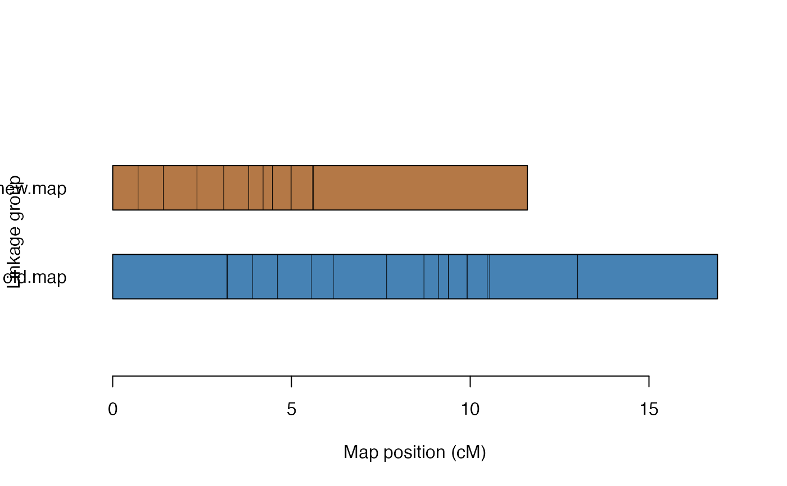

The function splits the input map in sub-maps given a distance threshold of neighboring markers and evaluates alternative phases between the sub-maps.
split_and_rephase(
input.map,
twopt,
gap.threshold = 5,
size.rem.cluster = 1,
phase.config = "best",
tol.final = 0.001,
verbose = TRUE
)an object of class mappoly.map
an object of class mappoly.twopt
containing the two-point information for the markers contained
in input.map
distance threshold of neighboring markers where the map should be spitted. The default value is 5 cM
the size of the marker cluster (in number of markers) from which the cluster should be removed. The default value is 1
which phase configuration should be used. "best" (default) will choose the maximum likelihood phase configuration
the desired accuracy for the final map (default = 10e-04)
if TRUE (default), the current progress is shown; if
FALSE, no output is produced
An object of class mappoly.map
Mollinari, M., and Garcia, A. A. F. (2019) Linkage analysis and haplotype phasing in experimental autopolyploid populations with high ploidy level using hidden Markov models, _G3: Genes, Genomes, Genetics_. doi:10.1534/g3.119.400378
map <- get_submap(solcap.dose.map[[1]], 1:20, verbose = FALSE)
tpt <- est_pairwise_rf(make_seq_mappoly(map))
#> INFO: Going singlemode. Using one CPU for calculation.
new.map <- split_and_rephase(map, tpt, 1, 1)
#> 3 submaps found ...
#> adding block 2 of 3
#> adding block 3 of 3
map
#> This is an object of class 'mappoly.map'
#> Ploidy level: 4
#> No. individuals: 160
#> No. markers: 20
#> No. linkage phases: 1
#>
#> ---------------------------------------------
#> Number of linkage phase configurations: 1
#> ---------------------------------------------
#> Linkage phase configuration: 1
#> map length: 16.92
#> log-likelihood: -356.72
#> LOD: 0
#> ~~~~~~~~~~~~~~~~~~
new.map
#> This is an object of class 'mappoly.map'
#> Ploidy level: 4
#> No. individuals: 160
#> No. markers: 17
#> No. linkage phases: 1
#>
#> ---------------------------------------------
#> Number of linkage phase configurations: 1
#> ---------------------------------------------
#> Linkage phase configuration: 1
#> map length: 11.6
#> log-likelihood: -293.36
#> LOD: 0
#> ~~~~~~~~~~~~~~~~~~
plot_map_list(list(old.map = map, new.map = new.map), col = "ggstyle")
